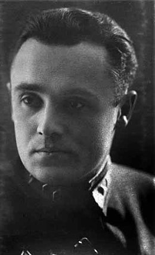

Rubrique culturelle
Certains inventeurs, ingénieurs ou mathématiciens oeuvrant dans le spatial sont à la source de nombreuses avancées techniques et technologiques. Et pourtant, leurs noms ont été rayés des livres d'histoire. Venez avec nous à la découverte de trois de ces génies oubliés
Sergueï Korolev est un ingénieur, fondateur du programme spatial soviétique. Grâce à son génie visionnaire, sa force de caractère, ses capacités de travail et ses talents d'organisateur, l'Union soviétique acquiert une position dominante dans le domaine spatial à la fin des années 1950 et au début des années 1960.

Korolev reçoit une formation d'ingénieur à l'Institut Baumann puis travaille dans le bureau d'études du constructeur d'avions Tupolev avant d'intégrer en 1931 le petit centre de recherche du GIRD qui effectue un travail de pionnier dans le domaine des fusées. Mi-1945, il est envoyé en Allemagne comme tous les spécialistes des fusées soviétiques pour tenter de récupérer le savoir-faire que l'équipe de Wernher von Braun a acquis en concevant et produisant le missile V2.
Puis, après avoir conçu plusieurs missiles balistiques, il conçoit en 1957 le premier satellite artificiel: Spoutnik 1.
S’enchaînent ensuite les innovations et les progrès, Laïka, Spoutnik 2,.. Vostok ( Gagarine, premier humain dans l’espace),… Mais c’est dans la course à la Lune que Korolev perdit son avance. Il réussit à y poser des petits véhicules télécommandés depuis la Terre en 1970. Mais les missions humaines américaines eurent bien plus de succès.
Il mit en place la N1, une fusée très puissante, capable d’envoyer des hommes sur la Lune. Mais il n’a pas pu la voir voler: il meurt en 1966 à 59 ans d’une tumeur, juste avant de connaître le succès des USA qui se feront poser des hommes sur la Lune quelques années plus tard.
Et pour la petite anecdote le KGB cachait Korolev et faisait passer un autre pour “ le père de Spoutnik" car ils avaient peur d’un kidnapping des américain.
Korolev est donc un pilier de la conquête spatiale qui aura permis à Youri Gagarine d’être le premier homme à être allé dans l’espace, même si malheureusement il est de nos jours très peu connu.
Katherine Johnson est une mathématicienne afro-américaine qui a participé à de nombreux calculs des missions de la NASA.
Elle est née le 26 août 1918 à White Sulphur Springs, en Virginie Occidentale. Elle est morte le 24 février 2020. Elle est l'une des premières femmes noires à collaborer avec la Nasa.
Katherine Johnson commence sa carrière dans la Nasa en 1952. Alors titulaire d'une licence de mathématiques, elle avait pour mission de contrôler le travail de ses supérieurs via ses calculs. Elle est la première étudiante noire de l'université de West Virginia à avoir intégré la Nasa. À cette époque, la ségrégation raciale était encore en vigueur aux Etats-Unis. La scientifique œuvre donc à un poste de "colored computer", ordinateur de couleur, à l'écart de ses collègues blancs.
Elle participe aux calculs de nombreuses missions spatiales. Comme celle de John Glenn qui lui avait demandé personnellement de vérifier les calculs. Elle a aussi participé aux calculs de la mission Apollo 11. Ainsi qu'à ceux de la navette spatiale, et des calculs pour des lancements de fusées sans pilote, des vols d'essais et des études de sécurité.
Aune époque ou les ordinateurs puissants n’existait pas encore, ou la ségrégation et le sexisme était de vigueur au Etats Unis, Une jeune femme noire réussit à s’imposer dans le mode du spatial gràce à son talent. Elle à largement contribué aux avancées majeures du spatial du XXème siècle, mais aussi à l'émancipation féminine et des personnes noires.
Konstantin Feoktistov est un ingénieur et cosmonaute soviétique.Il est né le 7 février 1926 à Voronej en Russie et mort le 21 novembre 2009. Il est le premier civil et le 12ème homme à aller dans l’espace. Il a participé et dirigé de nombreux programmes spatiaux soviétique.
Dès son plus jeune âge, Feoktistov est passionné d’aéronautique. Après la seconde guerre mondiale, Feoktistov s'inscrit à l'université technique d'État de Moscou, une école très réputée et obtient son diplôme d'ingénieur en 1949. Feoktistov obtient également un doctorat en physique.
Il va travailler dans le cadre du programme NII 4 qui vise à développer les premiers moteurs de fusées soviétique. Il va ensuite travailler au bureau d’étude OKB 1 qui va développer les premiers lanceurs soviétiques qui vont servir à mettre en orbite spoutnik 1. En 1957 Feoktistov va prendre la tête d’un groupe d'ingénieurs chargé de construire le première capsule spatiale habitée. Sous sa supervision l'équipe de conception détermine la forme, la structure, la trajectoire de descente et le système d'atterrissage du premier vaisseau spatial habité que utilisera Youri Gagarine. Il travaille par la suite sur les capsules du Voskhod et Soyouz. Pendant cette période, Feoktistov pense également la conception d'un véhicule spatial de 150 tonnes, assemblé en orbite, propulsé par un moteur ionique alimenté par un réacteur nucléaire et capable d'emmener des êtres humains vers Mars.
En 1964, Feoktistov est sélectionné dans le cadre d'une sélection d'ingénieurs pour devenir cosmonaute. En octobre de cette même année, il est affecté à l'équipage de Voskhod 1.Ce fut le premier vol de l'histoire emportant trois personnes.
Après ce vol, Feoktistov est interdit de vol pour toute autre mission spatiale pour raisons médicales. Toutefois, Feoktistov poursuit sa carrière d'ingénieur spatial et prend la tête du bureau d'études spatial soviétique qui conçoit les stations spatiales Saliout et Mir ainsi que le véhicule spatial Progress.
Konstantin Feoktistov était donc un ingénieur brillant et visionnaire qui a participé avec tant d’autres aux progrès spatiaux. C’est grâce à lui et à toutes les autres personnes qui ont travaillé anonymement que la technique spatiale est ce qu’elle est aujourd'hui.
Wernher Von Braun joue un rôle notable dans le développement des fusées au XXème siècle, il est l’un des principaux ingénieurs qui permettent le vol des fusées de l’Allemagne nazie, il est crédité pour avoir inventé la V2 et la Saturn-V.
Elle est née le 26 août 1918 à White Sulphur Springs, en Virginie Occidentale. Elle est morte le 24 février 2020. Elle est l'une des premières femmes noires à collaborer avec la Nasa.
Après son ancien parcours en allemagne il va continuer sa carrière aux États-Unis d’Amérique car suite à la reddition de son pays natal, il dut partir travailler pour les américains.
Elle participe aux calculs de nombreuses missions spatiales. Comme celle de John Glenn qui lui avait demandé personnellement de vérifier les calculs. Elle a aussi participé aux calculs de la mission Apollo 11. Ainsi qu'à ceux de la navette spatiale, et des calculs pour des lancements de fusées sans pilote, des vols d'essais et des études de sécurité.
Il va donc en 1955 être naturalisé Américain et va jouer un rôle important dans la conquête spatiale américaine, notamment grâce à la création de la fusée “Juno I” et donc du lancement du premier satellite artificiel “Explorer 1”.
Suite à la création de la Nasa (l’agence spatiale américaine), en 1958, Von Braun obtient le poste de directeur du centre de vol spatial Marshall, trois ans plus tard en 1961, il va prendre en charge la conception de la fusée Saturn V, suite au lancement du programme Apollo lancé par le président John Kennedy. La conception de cette fusée jouera un rôle essentiel dans la réussite des missions lunaires qui ont suivi.
Cet article a été rédigé par Sacha Valette, Quentin Vinet, Tonatiuh Quintero et Bastian Carta